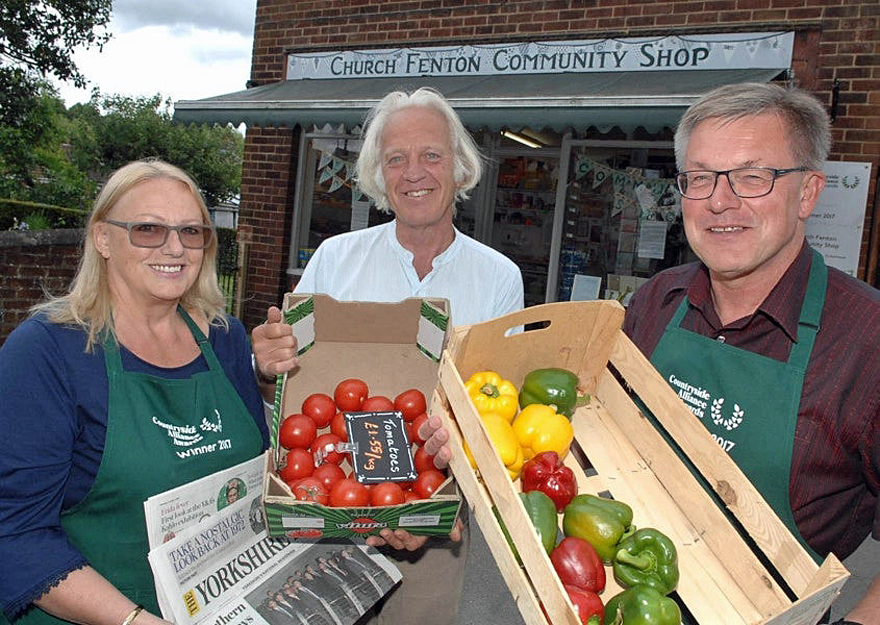

Church Fenton Community Shop
The Church Fenton Community shop opened on the 11th of June 2017. Located on the site of the old Post Office, the new shop is being run by the people of Church Fenton for the people of Church Fenton and the surrounding villages.
The shop has a good selection of food and products, many sourced locally, along with special offers on a regular basis. So, whether it is newspapers, groceries, green-groceries, milk, cards, magazines or seasonal goods, come along and support your local Community Shop.

Opening Hours
Mon - Fri ... 7am to 7pm (Shut 1:30pm to 3:00pm for re-stocking)
Sat ... 8am to 4pm
Sun ... 8am to 12 noon
Post Office Service
The Community Shop also offers a variety of Post Office services, these can be accessed on a Wednesday between 9:30 and 11:30. If all goes well, and this service is well used, we hope to be able to offer a Monday service as well.
Prescription Collection Service
If you are registered with Sherburn Group Practice you can opt to collect your prescription from the Community Shop. As we have to use dedicated volunteers, we are only able to give out prescriptions at the following times:
Mon 11am to 1:30pm
Wed 5pm to 7pm
Thu 11am to 1:30pm
Fri 5pm to 7pm
Volunteer with the Community Shop
There are lots of people working hard (but having fun along the way) making things happen - we are always happy for new people to become involved. If you have any time / skills you can share please do let us know.
Keep in Contact
You can keep in touch with what's going on at the shop via the Church Fenton Community Shop Facebook page.
Our address is:
The Old Post Office
Station Road
Church Fenton
LS24 9RA
Tel: 07598 836653
e-mail: info@thecfcshop.co.uk